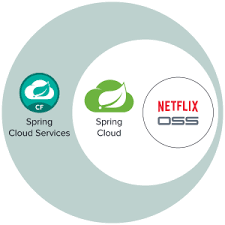
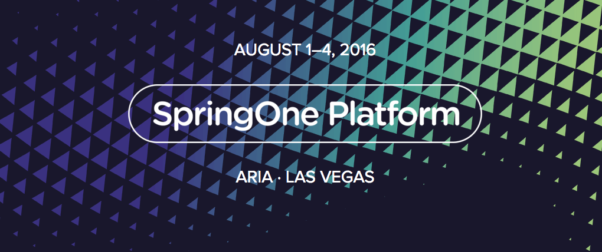
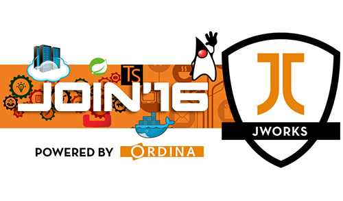
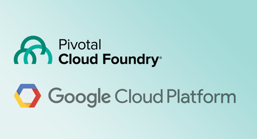
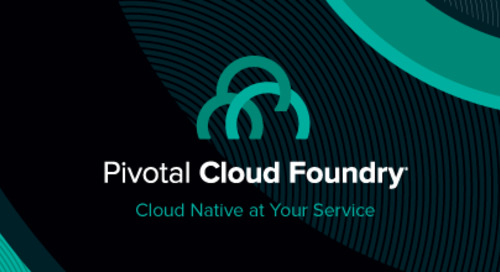
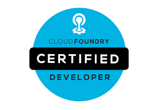
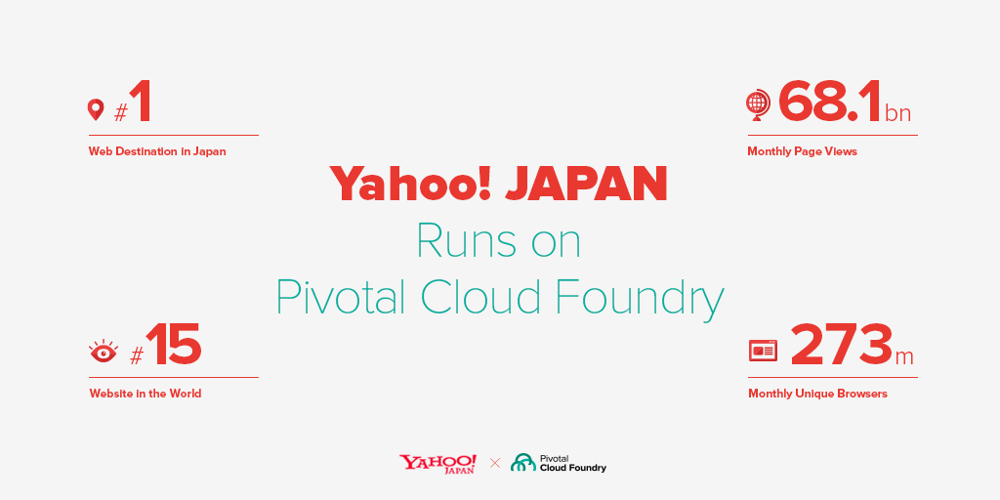

Why are we here?
Highlight our knowledge of Cloud Foundry
Explain our relationship with Pivotal
Show some of our Community Efforts
Discuss how this can benefit Securex
Beginning of 2015
First Impressions of Cloud Foundry

A cloud computing service offering
Allows you to manage and run applications
Without worrying about infrastructure
November 2015
Learned about Cloud Foundry itself
Learned the different vendors and distributions
Networked with EMC / Pivotal
Started developing on Pivotal Web Services
January 2016
Organised first workshop about Cloud Foundry in general
Deployed microservices POC on Pivotal Web Services
February 2016
Second workshop about Pivotal Cloud Foundry specifically
Showcased the POC on PWS
Talked about Lattice for local development
Q2 2016
Development of bigger POC with Spring Cloud and Netflix stack
Deployed on PWS
Sent in CFP for SpringOnePlatform
Got Accepted!
August 2016
Talks about Spring Boot Starters and Spring REST Docs
Lightning talk about Microservices Dashboard
Learned about Spring Cloud Streams
Oktober 2016
Talks about Spring Reactor and Couchbase
Talks about Docker and Kubernetes
A way of giving back to the community
January 2017
Workshop on Pivotal Cloud Foundry on Google Cloud Platform
Research several Build Pipelines
Research different Messaging solutions
Make use of Google Cloud Service Broker
April 2017
Training on Pivotal Cloud Foundry by Pivotal people
Ops training of Ops Manager
Devs training of Apps Manager
Upcoming
Verification of expertise using the Cloud Foundry platform and building cloud-native applications
Cloud Foundry is the third highest paid technology
Available from June
Cloud Foundry enables
Twelve Factor apps
Set of best practices for developing and deploying cloud-native software
Practices translate into platform features and workflow requirements
12factor.net
Companies using
Pivotal Cloud Foundry
Yahoo Japan uses PCF
Even the U.S. government runs on Cloud Foundry
"Transforming how the U.S. gov builds, buys and shares digital services"
Design centric, agile, open and data-driven
"Always be shipping"
Just start. Build MVP. Iterate. Learn. Do it again